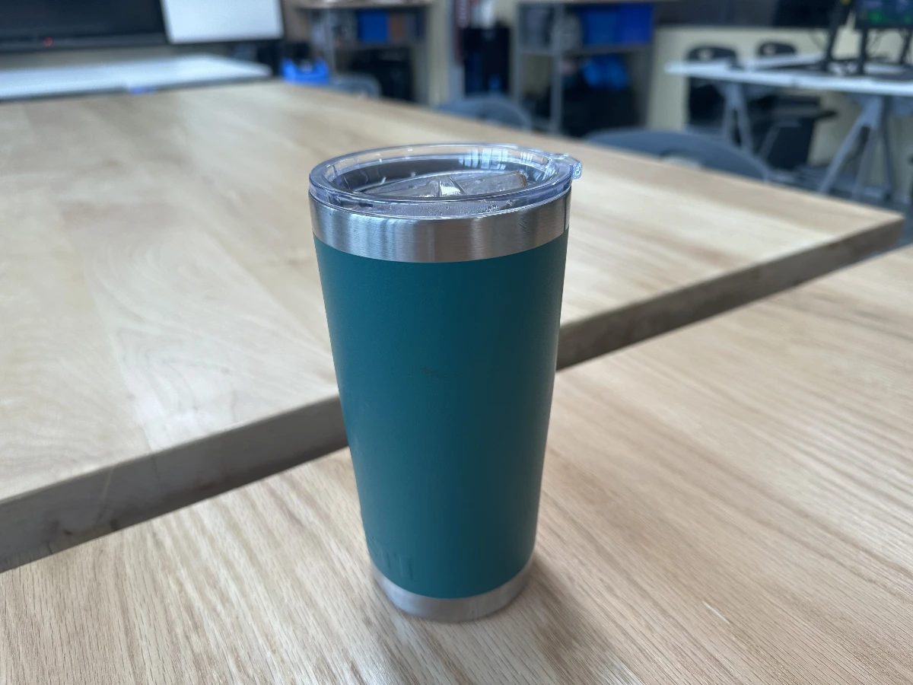

The Reusable Cup Problem
Bringing your own mug isn't automatically the greener choice.
Read case study →Guiding questionWhy should designers consider the effects a product has on the environment?
Intuition about environmental impact is unreliable, and life-cycle analysis is the correction for it. Paper bags feel better than plastic ones, electric cars feel clean, and local food feels lower-impact, and depending on where you draw the boundaries and which numbers you use, each of those can turn out to be wrong. LCA is the method for actually checking, which is why it is standardised under ISO 14040 rather than left to judgement.
What I want you to take from this topic is a healthy suspicion of environmental claims, including your own. Every LCA depends on where the analyst decided the system begins and ends, and those boundaries can be drawn to produce very nearly any conclusion you want. That is not a reason to dismiss the method. It is a reason to read the assumptions before the results, and to state your own assumptions clearly when you use it. Cradle-to-grave thinking will also change how you look at your IA product, because the phase carrying the largest impact is very often not the one you would have guessed.
A product's environmental story begins long before it reaches the consumer, and continues long after it is thrown away. Life-Cycle Assessment (LCA) is the internationally standardised method (ISO 14040:2006) for telling that story quantitatively: tracking every input of energy and material, and every output of emissions and waste, from raw material extraction through to final disposal.
A critical finding for designers: most of what a product will cost the environment is already settled once the design is finalised, before a single component is manufactured. Incorporating LCA thinking early allows designers to make choices (about materials, manufacturing processes, and end-of-life strategies) that genuinely reduce environmental harm rather than simply shifting it from one stage of the life cycle to another. These notes address each learning objective in turn.
Students must be able toExplain and discuss life-cycle analysis considerations, such as global warming potential, air, water and soil pollution, ecotoxicity and resource depletion, that cause environmental impact.
Life-Cycle Assessment (LCA) follows an internationally standardised method (ISO 14040:2006) for evaluating the environmental impacts of a product or service throughout its entire lifespan. LCA does not provide solutions: it provides data to support better-informed decisions, identifying "hotspots" (areas most in need of improvement based on environmental impact).
Environmental impact categories assessed in LCA:
| Impact category | Mechanism | Common metric |
|---|---|---|
| Climate change (global warming) | Greenhouse gas emissions (CO₂, CH₄, N₂O, F-gases) trap heat in the atmosphere | kg CO₂ equivalent (CO₂e) |
| Ozone depletion | Chlorofluorocarbons (CFCs) and HCFCs destroy stratospheric ozone | kg CFC-11 equivalent |
| Air pollution (acidification) | SO₂ and NOx emissions form acid rain, damaging ecosystems and infrastructure | kg SO₂ equivalent |
| Water pollution (eutrophication) | Excess nitrogen/phosphorus from runoff causes algal blooms, oxygen depletion | kg PO₄ equivalent |
| Soil contamination and erosion | Toxic chemicals, heavy metals, and mining activity degrade soil quality | Land use (m² × year) |
| Ecotoxicity | Toxic substances harm aquatic and terrestrial organisms throughout the food chain | CTUe (comparative toxic units) |
| Resource depletion | Extraction of finite fossil fuels, minerals, and rare earth elements | MJ surplus / kg Sb equivalent |
| Loss of biodiversity and habitat | Land use change, mining, and agriculture fragment and destroy ecosystems | Species loss potential |
| Noise pollution | Manufacturing, transport, and product operation generate noise affecting communities and wildlife | dB(A) / affected area |
Four phases of an LCA study (ISO 14040:2006):
LCA approaches:
| Approach | Scope | Used when |
|---|---|---|
| Cradle-to-grave | Full life cycle: extraction through disposal | Complete environmental impact required; regulatory compliance; eco-label certification |
| Cradle-to-gate | Extraction to factory gate only (excludes use and disposal) | Comparing material suppliers; manufacturer has no control over downstream use |
| Cradle-to-cradle | End-of-life is a recycling input (closed loop) | Circular economy design; materials designed for infinite recyclability |
| Gate-to-gate | One value-adding process within production only | Benchmarking a single manufacturing step (e.g., a painting process) |
| Well-to-wheel | Fuel/energy production through vehicle operation | Comparing transport fuel chains (EV vs. petrol vs. hydrogen) |
Every LCA needs a functional unit: a precise, measurable description of the function being delivered, against which all environmental impacts are calculated. Without it, comparisons between products are meaningless, because the products being compared may not actually do the same job in the same way.
This connects to the goal-definition phase described above: before any data is collected, the LCA team must agree what "one unit" of the product's function actually means. A poorly chosen functional unit can quietly bias an entire study toward one product over another.
Bringing your own mug isn't automatically the greener choice.
Read case study →Students must be able toExplain the life-cycle analysis inventory stages (cradle-to-grave) and the materials and energy usage that go into these processes: raw material extraction; manufacture; distribution and transport; use and maintenance; and disposal and recycling.
The five stages of a cradle-to-grave LCA:
| Stage | Activities | Key inputs/outputs | Environmental considerations |
|---|---|---|---|
| 1. Pre-production (raw material extraction) | Mining, drilling, harvesting; refining and processing; transportation to factory | Ore, fossil fuels, water; CO₂, tailings, wastewater | Habitat destruction; soil erosion; ecotoxicity from mine drainage; resource depletion |
| 2. Production (manufacturing) | Machining, moulding, assembly; finishing; quality control; factory cooling and lighting | Energy (electricity, heat); process chemicals; water; scrap/waste | Energy-related CO₂; process emissions; wastewater; solid waste |
| 3. Distribution and packaging | Packaging production; transport by road, rail, sea, air; warehousing | Packaging materials; transport fuels; refrigerants | Transport CO₂; packaging waste; refrigerant ozone depletion |
| 4. Utilisation (use phase) | Product operation; maintenance; repair; consumables replacement | Electricity, fuel, water, consumables (ink, batteries, filters) | In-use energy emissions; consumable waste; maintenance chemicals |
| 5. Disposal (end of life) | Collection; sorting; recycling; incineration; landfill | Recycled materials (back to stage 1); energy from incineration; landfill gas; leachate | Landfill leachate and gas; incineration emissions; recycling energy; e-waste toxics |
Hotspot analysis (where the biggest impact lies):
| Product type | Dominant hotspot | Evidence | Design implication |
|---|---|---|---|
| Conventional vehicle | Use phase (~90% of energy) | 2006 British Motor Industry study: 90% operational, 10% manufacturing | Improve fuel efficiency; reduce drag; develop hybrid/electric powertrains |
| Toyota Prius (hybrid) | Use phase (75%) + manufacturing (25%) | Higher battery manufacturing energy reduces operational %; total still lower than conventional | Battery longevity matters; recycle battery at end of life |
| Consumer electronics | Manufacturing phase | In-use energy reduced by Moore's Law, Energy Star, LED screens; manufacturing of chips/screens dominates | Extend product lifespan; design for repairability; use recycled materials |
Key conclusion (extended use of older electronics): Keeping an older product in use is usually the better environmental choice, because extracting, processing and manufacturing the replacement carries a cost of its own. A new, more energy-efficient laptop may have higher total environmental impact than continuing to use an older one, because the manufacturing emissions of the new laptop may never be offset by its use-phase efficiency gains.
Weighting caution: "The weighting process must be carefully considered. If some elements of the life-cycle are inappropriately prioritised and weighted, the final result can be even more distorted." LCA does not make decisions: it provides data for decision-makers.
A smartphone's lifecycle, jumbled up. Select an activity, then select the stage it belongs to.
Ten questions covering the learning objectives for this topic. Select one answer per question, then click "Check all answers" to see your score and the explanations.
A supermarket replaced single-use plastic carrier bags with reusable alternatives. A study compared the number of uses each bag needs before its climate impact per use falls below that of the plastic bag it replaces.
Table 1: Uses required to match a single-use plastic bag
| Bag | Mass | Uses required | Dominant impact stage |
|---|---|---|---|
| Single-use plastic (LDPE) | 8 g | 1 | Material production |
| Paper | 55 g | 3 | Manufacture, energy and water |
| Heavy plastic (PP woven) | 116 g | 11 | Material production |
| Cotton | 183 g | 131 | Cotton cultivation |
| Organic cotton | 183 g | 149 | Cotton cultivation |
(a) State the life-cycle stage that dominates the impact of the cotton bag, see Table 1. [1]
(b) Outline why organic cotton requires more uses than conventional cotton to break even, see Table 1. [2]
(c) Explain what Table 1 shows about the relationship between a product's durability and its environmental impact. [3]
(a) Raw material extraction and processing, specifically cotton cultivation.
(b) Organic cultivation gives lower yields per hectare, so growing the same mass of cotton uses more land, more water and more field operations, and that raises the impact embodied in the bag before it is ever made. Its advantages are in avoided pesticide and fertiliser use, which are real but do not appear in a measure based on climate impact, so on this one indicator it looks worse.
(c) Table 1 shows that a durable product carries a debt it has to repay through use. Every bag concentrates almost all its impact in the stages before the customer sees it, so making a bag that lasts means putting more material and energy in at the start, and the cotton bag needs 131 uses simply to get back to where a plastic bag started. Durability is therefore not an environmental benefit on its own, it only becomes one if the product is actually used enough times, and the deciding factor is behaviour rather than design. That is why the ranking inverts what most people would expect, with the most robust and natural-seeming bag carrying by far the largest debt. The practical consequence for a designer is that a reusable product should be judged on impact per use, not per item, and that a bag reused a hundred times is better than one designed to last a thousand uses and abandoned after twenty.
(a) Designers evaluate environmental impacts from raw material extraction (cradle) through manufacture, distribution, use and disposal (grave).
• Raw material extraction / cultivation ✓
• Pre-manufacture / cradle stage ✓
Award [1] for the correct life-cycle stage up to [1 max].
(b) Life-cycle analysis helps designers factually analyse a product's entire life cycle in terms of sustainability.
• Organic cultivation gives lower yields per hectare ✓
• The same mass of cotton requires more land ✓
• More water and more field operations are needed ✓
• That raises the impact embodied before the bag is made ✓
• Its advantages are avoided pesticide and fertiliser use ✓
• Those benefits do not appear in a climate impact measure ✓
• On this single indicator it therefore scores worse ✓
Award [1] for each relevant brief point on why organic cotton requires more uses up to [2 max]. Credit responses that identify the limitation of a single indicator.
(c) Life-cycle analysis helps designers factually analyse a product's entire life cycle in terms of sustainability.
• A durable product carries a debt it must repay through use ✓
• Almost all impact is concentrated before the customer receives the bag ✓
• Making a bag that lasts means more material and energy at the start ✓
• The cotton bag needs 131 uses to return to where a plastic bag started ✓
• Durability is not an environmental benefit on its own ✓
• It becomes one only if the product is actually used enough times ✓
• The deciding factor is user behaviour rather than design ✓
• The ranking inverts expectation: the most natural-seeming bag carries the largest debt ✓
• A reusable product should be judged on impact per use, not per item ✓
• A bag reused a hundred times beats one built for a thousand and abandoned after twenty ✓
Award [1] for each relevant reason / cause explaining the relationship between durability and impact up to [3 max]. Credit responses that reason from the figures in Table 1.
A silicon photovoltaic panel generates electricity for twenty-five years. Making it is energy intensive, because silicon must be refined to high purity in a furnace and then grown into crystal.
Table 2: Life-cycle assessment of one 400 W panel
| Stage | Share of total impact | Note |
|---|---|---|
| Raw material extraction | 11 % | Quartz sand, aluminium, glass |
| Manufacture | 71 % | Silicon refining and crystal growth |
| Distribution | 6 % | Largely sea freight |
| Use | 2 % | Occasional cleaning |
| Disposal | 10 % | Glass and frame recovered; cells rarely |
| Energy payback time | 1.3 years | |
(a) State the hotspot identified by the assessment in Table 2. [1]
(b) Describe what an energy payback time of 1.3 years means for this panel, see Table 2. [2]
(c) Justify carrying out a cradle-to-grave assessment rather than a cradle-to-gate one for this product, see Table 2. [3]
(a) Manufacture, at 71 % of total impact.
(b) The panel generates as much energy in 1.3 years as was consumed making it, so from that point on everything it produces is a net gain. Across a twenty-five year life it therefore returns roughly nineteen times the energy invested in it.
(c) A cradle-to-gate assessment stops at the factory door, and for a solar panel that is precisely where the story is most misleading. Everything before the gate is cost and nothing after it is, so a gate boundary would record 71 % manufacturing impact and no benefit at all, making the panel look like an unusually damaging product. The purpose of a panel is what it does during the use phase, and that phase is worth only 2 % of impact but produces twenty-five years of generation, which is the entire reason for making it. Extending the boundary to the grave is also what makes the 1.3 year payback figure calculable, and that figure is the one a buyer or a policymaker actually needs. The disposal stage matters too, since 10 % of impact sits there and Table 2 notes that cells are rarely recovered, so a gate assessment would hide a stage that is both significant and improvable. Cradle-to-gate suits comparing two suppliers of the same component; cradle-to-grave is required whenever a product's justification lies in what it does after it is sold.
(a) • Manufacture, at 71 % ✓
• Silicon refining and crystal growth ✓
Award [1] for the correct hotspot up to [1 max].
(b) Life-cycle analysis helps designers factually analyse a product's entire life cycle in terms of sustainability.
• The panel generates as much energy in 1.3 years as was consumed making it ✓
• From that point everything it produces is a net gain ✓
• Over a 25 year life it returns roughly nineteen times the energy invested ✓
• The manufacturing impact is repaid early in the product's life ✓
• It gives a single figure a buyer can weigh against the panel's lifetime ✓
• Payback depends on where the panel is installed, since generation varies with location ✓
Award [1] for each detail, leading to an account of what the payback time means, up to [2 max].
(c) Life-cycle assessment boundaries determine what the assessment can show.
• Cradle-to-gate stops at the factory door ✓
• Everything before the gate is cost and nothing after it is ✓
• A gate boundary records 71 % manufacturing impact and no benefit ✓
• The panel would appear to be an unusually damaging product ✓
• The purpose of a panel is what it does during the use phase ✓
• Use is only 2 % of impact but produces 25 years of generation ✓
• Extending to the grave is what makes the 1.3 year payback calculable ✓
• That figure is the one a buyer or policymaker needs ✓
• 10 % of impact sits in disposal, and cells are rarely recovered ✓
• A gate assessment hides a stage that is significant and improvable ✓
• Cradle-to-gate suits comparing suppliers of the same component ✓
• Cradle-to-grave is required where a product's justification lies in what it does after sale ✓
Award [1] for each valid reason / piece of evidence justifying the cradle-to-grave boundary up to [3 max]. Award a maximum of [2] where the response does not identify what a gate boundary would omit.
A city is deciding whether to subsidise electric scooters in place of petrol ones for its delivery riders. It commissioned a life-cycle assessment of both.
A delivery rider covers about 20 000 km a year and keeps a scooter for five years.
(a) List the four phases of a life-cycle assessment under ISO 14040. [2]
Table 3: Life-cycle greenhouse gas emissions, kg CO₂e over 100 000 km
| Stage | Petrol scooter | Electric, grid at 350 g/kWh | Electric, grid at 50 g/kWh |
|---|---|---|---|
| Manufacture, vehicle | 780 | 790 | 790 |
| Manufacture, battery | — | 640 | 640 |
| Fuel or electricity | 6100 | 1750 | 250 |
| Maintenance | 410 | 190 | 190 |
| Disposal | 90 | 130 | 130 |
| Total | 7380 | 3500 | 2000 |
(b) Outline why the grid's carbon intensity changes the conclusion of the assessment, see Table 3. [2]
The battery accounts for 640 kg CO₂e of the electric scooter's manufacture. Its cells are guaranteed for 50 000 km.
(c) Describe why the battery guarantee matters to the totals in Table 3. [2]
A councillor argues the assessment proves electric scooters should be subsidised. Another argues that both are worse than a bicycle and the money should go to cycle lanes.
(d) Evaluate what the assessment in Table 3 can and cannot tell the council. [4]
(a) Goal and scope definition; inventory analysis; impact assessment; interpretation.
(b) The electric scooter's emissions are dominated by the electricity it consumes, so the grid supplying it is effectively part of the product. On a 350 g/kWh grid its total is 3500 kg against the petrol scooter's 7380, and on a 50 g/kWh grid it is 2000 kg, so the advantage ranges from just over half to nearly three quarters depending on a factor the scooter's designer does not control.
(c) The totals assume one battery lasts the whole 100 000 km, and the guarantee covers only half of that. If the battery is replaced once, another 640 kg is added, raising the electric total on a 350 g/kWh grid from 3500 to 4140 and cutting the advantage over petrol by about a sixth. The battery is the electric scooter's largest single manufacturing burden, so how long it lasts is the assumption the whole comparison is most sensitive to.
(d) The assessment answers the question it was asked and neither councillor's argument is entirely supported by it.
What it establishes is solid. Over 100 000 km the electric scooter emits less than the petrol one on either grid, and the margin is large enough that no plausible correction reverses it, since even adding a second battery leaves it well below 7380 kg. It also shows where the impact sits, so the council can see that the fuel or electricity stage dominates and that manufacture is nearly identical for both vehicles, which means the decision genuinely turns on running the vehicle rather than on building it.
What it cannot do is answer the second councillor. The assessment compares two scooters because that is the goal and scope it was given, and a boundary drawn around scooters cannot rank a bicycle, which was never in the inventory. That is a limitation of the study rather than evidence against the argument, and answering it would need a new assessment with a wider scope, including whether a bicycle can actually cover 20 000 km a year of deliveries.
Several things are outside the assessment altogether. It measures greenhouse gas emissions only, so it says nothing about air quality at street level, which is a strong argument for electric in a city and is invisible here. It says nothing about noise, cost, or the mining impacts of battery materials, and it assumes a fixed grid intensity when a real grid decarbonises over the five years the scooter is owned, which would favour electric further.
The council should read it as evidence that electric beats petrol on carbon, not as a ranking of every option or as a complete environmental verdict. The first councillor is right about what the study shows and wrong to call it proof that subsidy is the best use of the money, since that is a question about alternatives the study never examined.
(a) • Goal and scope definition ✓
• Inventory analysis ✓
• Impact assessment ✓
• Interpretation ✓
Award [1] for two correct phases and [2] for all four, up to [2 max].
(b) Designers evaluate environmental impacts across the whole life cycle.
• The electric scooter's emissions are dominated by the electricity it consumes ✓
• The grid supplying it is effectively part of the product ✓
• At 350 g/kWh the total is 3500 kg against the petrol scooter's 7380 ✓
• At 50 g/kWh the total falls to 2000 kg ✓
• The advantage ranges from just over half to nearly three quarters ✓
• The deciding factor is outside the designer's control ✓
• The same vehicle has different impacts in different countries ✓
Award [1] for each relevant brief point on the effect of grid intensity up to [2 max]. Credit responses that quote values from Table 3.
(c) Hotspot identification shows which assumptions an assessment is most sensitive to.
• The totals assume one battery lasts the full 100 000 km ✓
• The guarantee covers only 50 000 km, half that distance ✓
• A single replacement adds another 640 kg ✓
• The electric total on a 350 g/kWh grid rises from 3500 to 4140 ✓
• The advantage over petrol is cut by about a sixth ✓
• The battery is the largest single manufacturing burden for the electric scooter ✓
• Battery life is therefore the assumption the comparison is most sensitive to ✓
• It also identifies battery longevity as the most valuable design improvement ✓
Award [1] for each detail, leading to an account of why the guarantee matters to the totals, up to [2 max]. Credit responses that quantify the effect.
(d) Life-cycle analysis helps designers factually analyse a product's entire life cycle, within the goal and scope defined for the study.
What it establishes:
• The electric scooter emits less than petrol on either grid over 100 000 km ✓
• The margin is large enough that no plausible correction reverses it ✓
• Even a second battery leaves the electric total well below 7380 kg ✓
• It shows the fuel or electricity stage dominates ✓
• Vehicle manufacture is nearly identical, so the decision turns on running rather than building ✓
What it cannot establish:
• It compares two scooters because that is the goal and scope it was given ✓
• A boundary around scooters cannot rank a bicycle, which was never in the inventory ✓
• That is a limitation of the study, not evidence against the argument ✓
• Answering it needs a new assessment with a wider scope ✓
• It would have to address whether a bicycle can cover 20 000 km a year of deliveries ✓
What is outside it altogether:
• It measures greenhouse gases only, so street-level air quality is invisible ✓
• Air quality is a strong argument for electric in a city ✓
• Noise, cost and battery material mining impacts are not included ✓
• It assumes a fixed grid intensity, while a real grid decarbonises over five years ✓
• That assumption understates the electric advantage ✓
Judgment:
• It is evidence that electric beats petrol on carbon ✓
• It is not a ranking of every option or a complete environmental verdict ✓
• The first councillor is right about what it shows and wrong to call it proof about the best use of money ✓
Award [1] for each distinct strength / limitation, leading to an appraisal of what the assessment can and cannot tell the council, up to [4 max]. Award a maximum of [3] where the response does not address both what it establishes and what it omits. Credit responses that identify the goal and scope boundary as the reason the bicycle cannot be ranked.
Linking Questions

Bringing a reusable cup to a coffee shop feels like an obviously 'green' choice, compared to getting your coffee in a single-use paper cup. In the long run it usually is, but "usually" is doing a lot of work in that sentence. An LCA comparing the two doesn't start from the assumption that reusable wins. Rather, it starts by defining a functional unit, one serving of coffee delivered to a customer, and then adds up the full impact of each option against that unit.
A ceramic mug or steel cup takes far more energy, water and raw material to manufacture than a single paper cup, and every wash afterwards adds its own water, detergent and energy cost. Depending on the study and which impact category is being measured, carbon, water use or resource depletion, a reusable cup typically needs to be used somewhere between several dozen and a few hundred times before its higher manufacturing footprint is paid back by all the disposable cups it replaced. A reusable cup used four times and then left in a drawer can have a worse footprint than the disposable cups it was meant to save. The "greener" choice depends entirely on what happens after the purchase. This is the kind of hotspot an LCA is built to catch and a simple intuition is not.
As a side note, when I was in university I use a lot of paper plates because I was lazy and didn't want to wash a "real" plate. In retrospect this is one of many, many things I judgingly shake my head at my past self for, but at least I probably produced less of an impact on the environment, as I would have washed just that plate hundreds of times. Wash dishes together or in a dishwasher to reduce water and energy consumption, and avoid microwaving Totinos Pizza Rolls on paper plates because while they taste good, they aren't good for you.
Side side note: I'm proud of all of you who have continued to use your one Stanley cup, rather than purchase multiple cups, or chase the latest bottle/cup trend.